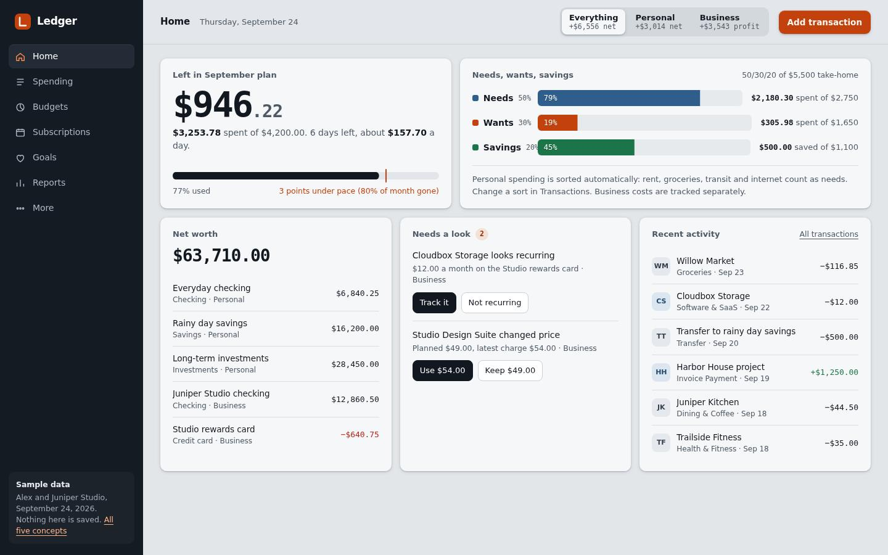
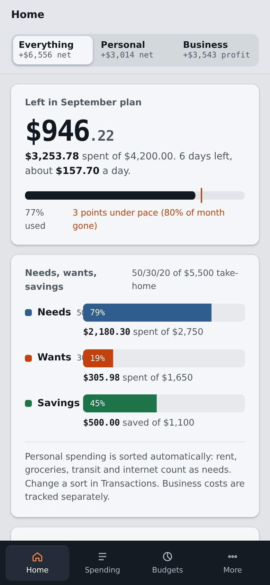

1
Console
The home screen is the working app. Scroll down and the next 30 days play forward: bills and paydays land, and your cash balance moves with them.
- Feels like
- A calm, dense control panel. Everything in one place.
- Scrolling
- Moves a date cursor through the next month. You can also drag it.
- Ends with
- A one-line box to add a transaction. Try "Juniper Kitchen 12.50".
- Colors, type
- Geist